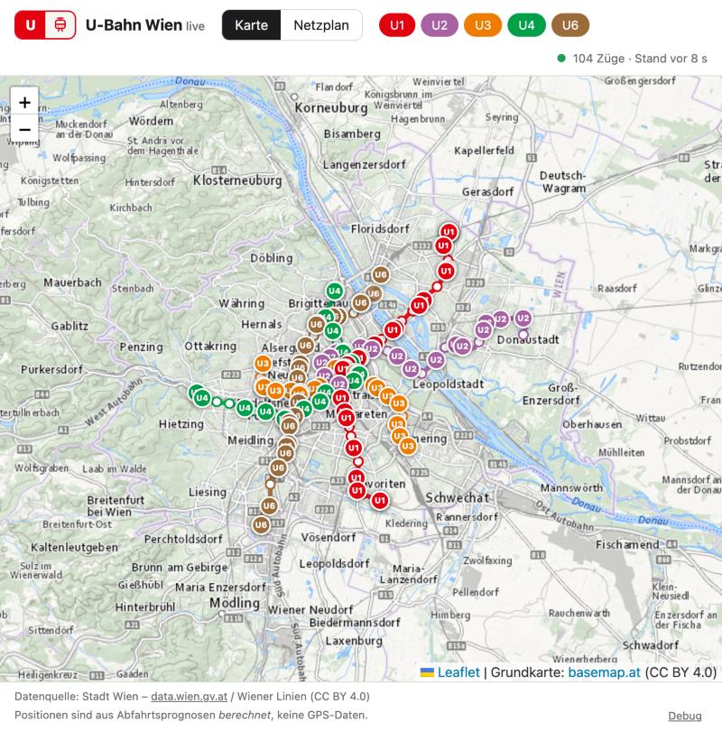
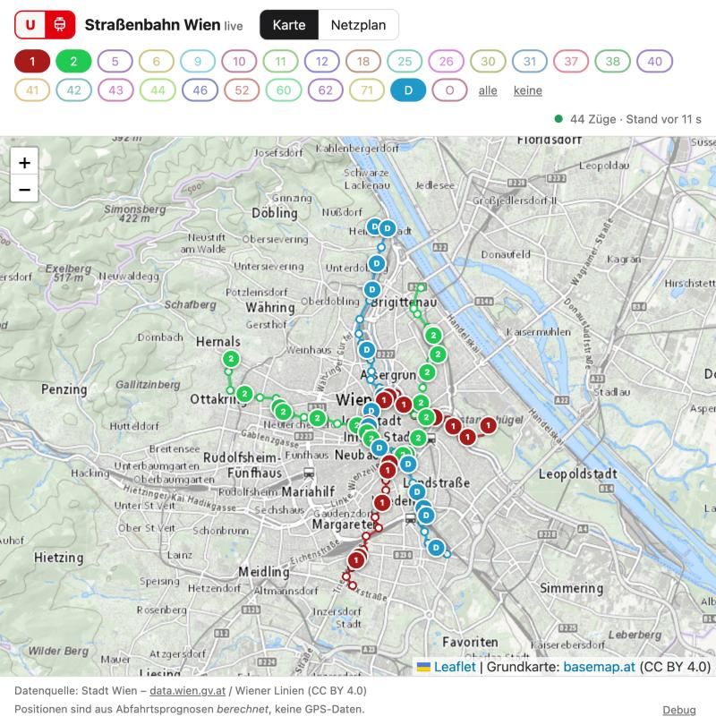
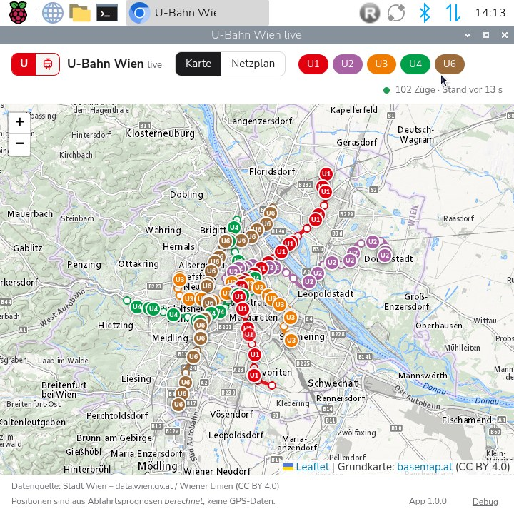

Wo fährt die U-Bahn gerade? Berechnete Live-Positionen aller U-Bahn-Linien und 27 Straßenbahnlinien auf einer Karte.
Raspberry Pi / Hackberry: siehe unten. Alle Downloads: Releases.



Züge als Punkte mit Fahrtrichtung, Stationsnamen ab Zoomstufe 13, Tooltip mit nächster Station und Abfahrt. Zweite Ansicht als schematischer Netzplan.
Umschalter oben links. Linien lassen sich einzeln ein- und ausblenden; an jeder Linie steht, wie viele Züge bzw. Bahnen gerade fahren.
Zwischen den Abfragen laufen die Züge auf Basis der Fahrzeiten weiter; Korrekturen werden weich eingeblendet.
Die App prüft beim Start und danach alle 6 Stunden, ob es eine neue Version gibt (siehe unten).
Die Wiener Linien liefern keine GPS-Daten, nur Abfahrtsprognosen pro Haltepunkt. Die Züge werden daraus rekonstruiert.
Die Abfahrten benachbarter Stationen werden verkettet (Abfahrt in Station i plus Fahrzeit ≈ Abfahrt in Station i+1), jede Kette ist ein Zug. Der Kopf der Kette legt fest, wo der Zug gerade ist: in der Station oder zwischen zwei Stationen. Wo Daten fehlen, wird der Zug ausgeblendet statt falsch gezeigt.
Die Positionen sind berechnet und nur ungefähr richtig. Bei der U-Bahn liegt die Abweichung typischerweise im Bereich einer Station, bei der Straßenbahn ist sie größer (Straßenverkehr, weit entfernte Prognosen sind im Kern Fahrplan).
| Plattform | Wie das Update läuft |
|---|---|
| Windows | Automatisch im Hintergrund: Update wird geladen und beim Beenden installiert, die App bietet „Neu starten“ an. |
| macOS | Die App meldet eine neue Version und öffnet den Download. Ein stilles Update ist nur mit einem bezahlten Apple-Zertifikat möglich, das die App nicht hat. |
| Hackberry / Linux | Die App lädt das neue Paket, prüft die SHA-256-Prüfsumme, ersetzt sich selbst und startet nach einem Klick neu. |
Geprüft wird beim Start und alle 6 Stunden. Ohne Netz passiert nichts.
Läuft in einem Chromium-App-Fenster, braucht nur Python 3 und Chromium. Ohne sudo, mit Desktop-Verknüpfung.
curl -LO https://github.com/fmatsch/wienerlinien-live/releases/latest/download/wienerlinien-live-hackberry.tar.gz
tar xzf wienerlinien-live-hackberry.tar.gz
./wienerlinien-live/install.shStart über das Symbol auf dem Desktop, das Anwendungsmenü oder ~/.local/bin/wienerlinien-live.
| macOS | Die App ist nicht signiert. Beim ersten Start im Finder per Rechtsklick auf Öffnen gehen und bestätigen. Meldet macOS stattdessen, die App sei „beschädigt“ (sie ist nicht beglaubigt, nicht kaputt), im Terminal xattr -cr "/Applications/Wiener Linien Live.app" ausführen. |
| Windows | SmartScreen meldet einen unbekannten Herausgeber: Weitere Informationen → Trotzdem ausführen. |
| Prüfsummen | Jedes Release enthält SHA256SUMS.txt. |
Echtzeitdaten, Haltestellen und Fahrpläne: Stadt Wien – data.wien.gv.at / Wiener Linien (CC BY 4.0). Grundkarte: basemap.at (CC BY 4.0). Die App fragt die Daten über einen Proxy mit Cache ab, damit die Abfragegrenzen der Wiener Linien eingehalten werden.
Dies ist ein privates, inoffizielles Projekt und steht in keiner Verbindung zu den Wiener Linien. Die angezeigten Positionen sind keine verbindliche Auskunft.